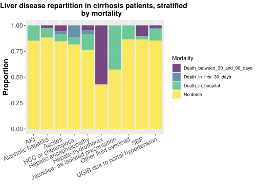
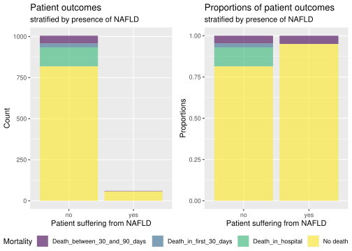

Rows: 1065 Columns: 9
── Column specification ────────────────────────────────────────────────────────
Delimiter: "\t"
chr (6): Sex, Age, Liver_disease, Comorbidities, Etiologies, Mortality
dbl (3): Id, CPS, Charlson_CI
ℹ Use `spec()` to retrieve the full column specification for this data.
ℹ Specify the column types or set `show_col_types = FALSE` to quiet this message.
Rows: 819 Columns: 16
── Column specification ────────────────────────────────────────────────────────
Delimiter: "\t"
chr (12): Sex, Liver_disease, E_Alcohol_consumption, E_Hepatitis_c, E_Hepati...
dbl (4): Id, Age, CPS, Charlson_CI
ℹ Use `spec()` to retrieve the full column specification for this data.
ℹ Specify the column types or set `show_col_types = FALSE` to quiet this message.
Rows: 611 Columns: 25
── Column specification ────────────────────────────────────────────────────────
Delimiter: "\t"
chr (21): Sex, Liver_disease, C_Myocardial_infarction, C_Congestive_Heart_Fa...
dbl (4): Id, Age, CPS, Charlson_CI
ℹ Use `spec()` to retrieve the full column specification for this data.
ℹ Specify the column types or set `show_col_types = FALSE` to quiet this message.
Effect of different variables on mortality
During that part, we will investigate to determine to what extent some variables like CPS, age and liver disease affect the mortality of the patients before investigating specific and relevant etiologies that have been picked using a linear regression performed in file 07_analysis_CPS.qmd.
This plot proves the fact that CPS value accurately describes the mortality of cirrhosis patients. It shows that a low CPS is correlated to a higher survival rate. On the other side, a patient with a high CPS has more chances of dying of cirrhosis.
The plot showing the proportions of patient outcomes is more relevant than the one showing their distribution, because it is relative to the count of patients. Nonetheless, the distribution plot allows us to see that the age categories [30,40] and [90,100] don’t contain enough patients to be statistically relevant. Therefore, if we only take the other age categories into consideration, we can see slight increase in mortality when the age of the patients is increasing.
bar_plot_LD_Mortality<- dat_aug_03 |>ggplot(aes(x = Liver_disease, fill = Mortality)) +geom_bar(position ="fill", stat ="count", alpha =0.7) +labs(title ="Liver disease repartition in cirrhosis patients, stratified by mortality",y ="Proportion") +scale_fill_viridis_d() +theme(axis.title.x=element_blank()) +scale_x_discrete(guide =guide_axis(angle =25)) +theme(plot.title =element_text(hjust =0.5, face ="bold", size =14)) +theme(axis.text=element_text(size=12),axis.title=element_text(size=14,face="bold"))bar_plot_LD_Mortality

By looking at the mortality of patients with different liver diseases, we can see the type of liver disease impacts greatly the mortality of patients. The size of the samples “Hepato-hydrothorax” and “Jaundice- as isolated presentation” being small (less than 15 patients), the data concerning these liver disease should not be taken into account for the analysis. This plot also provides some information about how fulminant the different liver diseases are. For instance, the categories “Other fluid overload” and “SBP” have approximately the same proportions of overall mortality, but the category “Other fluid overload” seems to be more fulminant because all of the patients that died after contracting that disease died in hospital, when the majority of the patient that died after contracting SBP died more than 30 days after leaving the hospital.
We start by creating a new data set where we add three variables. The three variable are three different etiologies and their significance concerning Child Pugh score was assessed with a linear regression model in the file 07. Because the Child Pugh Score indicates the severity of the cirrhosis, it could be related to the mortality, and we will verify that hypothesis with the following plots.
To determine if alcohol consumption impacts mortality, we plot the distribution and the proportions of patient outcomes stratified by alcohol consumption. Alcohol was considered by the linear regression as a non-significant etiology, we therefore expect to see very few changes in the proportions. We will here plot the distribution (with normal counts) and the proportion of the etiology in the population to be able to have a relative comparison.
The proportions plot shows a very slight/ unsignificant increase in mortality when the patients are alcohol consumers, therefore we can’t notice a big mortality difference between the two populations.
Non-alcoholic fatty liver disease impact on mortality
On the contrary to alcohol consumption, NAFLD was considered a significant etiology.
NAFLD_distribution <- dat_mortality |>ggplot(mapping =aes(x = NAFLD,fill = Mortality,na.rm =TRUE)) +geom_bar(alpha =0.6,position ="stack") +scale_fill_viridis_d() +labs(title ="Patient outcomes",subtitle ="stratified by presence of NAFLD",x ="Patient suffering from NAFLD", y ="Count") +theme(legend.position ="none")NAFLD_proportions <- dat_mortality |>ggplot(mapping =aes(x = NAFLD,fill = Mortality,na.rm =TRUE)) +geom_bar(alpha =0.6,position ="fill") +scale_fill_viridis_d() +labs(title ="Proportions of patient outcomes",subtitle ="stratified by presence of NAFLD",x ="Patient suffering from NAFLD",y ="Proportions")NAFLD_impact_mortality <-ggarrange(NAFLD_distribution, NAFLD_proportions, legend ='bottom',common.legend =TRUE)NAFLD_impact_mortality

On the proportions plot, we can see that patients with NAFLD seem to have more chance to survive to cirrhosis. However, we can’t reach any specific conclusion due to the small population of patients with NAFLD. NAFLD, significant etiology, has therefore a ‘positive’ impact on cirrhosis patients, which seems hard to understand.
# A tibble: 611 × 26
Id Sex Age Liver_disease C_Myocardial_infarct…¹ C_Congestive_Heart_F…²
<dbl> <chr> <dbl> <chr> <chr> <chr>
1 1 Fema… 9 Hepatic ence… No No
2 2 Male 6 SBP No No
3 2 Male 6 SBP No No
4 3 Fema… 8 Ascites No No
5 4 Fema… 7 Other fluid … Yes Yes
6 5 Male 7 Hepatic ence… No No
7 6 Male 8 AKI Yes Yes
8 7 Male 7 UGIB due to … No No
9 8 Male 6 Other fluid … No No
10 8 Male 6 Other fluid … No No
# ℹ 601 more rows
# ℹ abbreviated names: ¹C_Myocardial_infarction, ²C_Congestive_Heart_Failure
# ℹ 20 more variables: C_Peripheral_vascular_disease <chr>,
# C_Cerebro_Vascular_disease <chr>, C_Dementia <chr>,
# C_Chronic_pulmonary_disease <chr>, C_Rheumatological_disease <chr>,
# C_Pepticulcer_disease <chr>, C_Mild_liver_disease <chr>,
# C_Heiplegia_paraplegia <chr>, C_Renal_disease <chr>, C_Malignancy <chr>, …
nb_etiologies <- dat_aug_E_03 |>ggplot(mapping =aes(x = number_etiologies,fill = Mortality,na.rm =TRUE)) +geom_bar(alpha =0.6,position ="fill") +scale_fill_viridis_d() +labs(title ="Patient outcomes",subtitle ="stratified by the number of etiologies",x ="Number of etiologies", y ="Count") nb_etiologies
# A tibble: 819 × 17
Id Sex Age Liver_disease E_Alcohol_consumption E_Hepatitis_c
<dbl> <chr> <dbl> <chr> <chr> <chr>
1 1 Female 9 Hepatic encephalopathy No No
2 2 Male 6 SBP Yes Yes
3 3 Female 8 Ascites No No
4 3 Female 8 Ascites No No
5 4 Female 7 Other fluid overload No No
6 4 Female 7 Other fluid overload No No
7 4 Female 7 Other fluid overload No No
8 4 Female 7 Other fluid overload No No
9 4 Female 7 Other fluid overload No No
10 5 Male 7 Hepatic encephalopathy Yes No
# ℹ 809 more rows
# ℹ 11 more variables: E_Hepatitis_b <chr>, E_Non_alcoolic_fatty_LD <chr>,
# E_Cryptogenic <chr>, E_Primary_sclerosing_cholangitis <chr>,
# E_Autoimmune_hepatitis <chr>, E_Primary_biliary_cholangitis <chr>,
# CPS <dbl>, Charlson_CI <dbl>, Comorbidities <chr>, Mortality <chr>,
# number_comorbidities <int>
nb_comorbidities <- dat_aug_C_03 |>ggplot(mapping =aes(x = number_comorbidities,fill = Mortality,na.rm =TRUE)) +geom_bar(alpha =0.6,position ="fill") +scale_fill_viridis_d() +labs(title ="Patient outcomes",subtitle ="stratified by the number of comorbidities",x ="Number of comorbidities", y ="Count") nb_comorbidities
distinct_E<- dat_aug_E_03 |># to count the patients with many etiologies only oncedistinct(Id, .keep_all =TRUE) E_table <- distinct_E %>%group_by(number_etiologies) %>%summarise(number_of_patients =n())E_table
distinct_C<- dat_aug_C_03 |># to count the patients with many comorbidities only oncedistinct(Id, .keep_all =TRUE) C_table <- distinct_C %>%group_by(number_comorbidities) %>%summarise(number_of_patients =n())C_table
By looking at the number of patients present in each sample, we can see that there is only one patient that has six comorbidities, so we choose not to take that category into account for the analysis of the bar charts. The bar chart stratified on the number of etiologies shows that this number is proportional to the mortality: the more etiologies a patient has, the more likely he is to die of cirrhosis. Concerning the bar chart stratified on the number of comorbidities, there is no such trend in the mortality proportions, but we can still see that the proportion of death that occur in the hospital increases, so the severity of the disease might increase with the number of comorbidities.
Conclusion
This analysis allows to conclude that CPS and the type of liver disease have a major impact on patient’s outcome, whereas age has a slight impact. We also got to test the linear regression significant results, noticing that NAFLD seems to have a positive impact on the mortality, whereas alcohol consumption doesn’t seem to play a role in the patients outcome. Regardless of the type of early predictors, their number also has an effect on the observed mortality. Indeed, an important number of etiologies tends to increase the mortality of the patients.